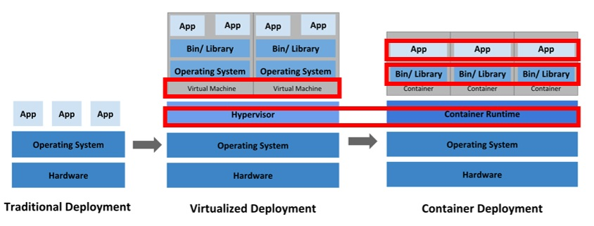

먼저 본질을 이해하고 시작하자.
새로운 기술을 다룰 때 중요한 것은 그 본질을 제대로 파악하는 것이다.
표면적인 노하우만을 습득하는 것만으로는 다양한 환경에서 응용하기 어렵고, 기억할 것들이 너무 많아져 금방 잃어 버리게 된다.
또한 이런 단순한 지식들은 새로운 기술이 등장해 버리면 금방 사라지고 그 가치를 잃어버리는 경우가 많다.
엔터프라이즈 제품 vs 커뮤니티제품
엔터프라이즈 제품은 기업용 상업용으로 높은 안정성, 성능, 보안 수준을 제공
커뮤니티제품은 개인용 교육용으로 개발중심적 오픈소스 기반
JBOSSAS7 VS WILDFLY8 VS JBOSSEAP6
JBOSSAS7 -> 커뮤니티 버전 (오픈소스)
WILDFLY9 -> == JBOSS8 제품이름의 혼선을 막기위해 2013부터 변경
JBOSSEAP6 -> 엔터프라이즈 버전 RED HAT에서 직접 관리
클라우드 환경에서 JAVA EE6, JAVA SE7 도입 권장
공개키 - 대칭키
RSA AES
해쉬함수
SHA
PKI는 "Public Key Infrastructure"의 약어로, 공개 키 기반의 보안 인프라를 의미합니다.
PKI는 디지털 인증서 및 공개 키 관리에 사용되는 체계와 프로토콜을 포함한 전체 시스템을 지칭합니다.
일반적으로 PKI는 다음과 같은 구성 요소로 이루어집니다:
디지털 인증서: 디지털 인증서는 공개 키를 식별 정보와 함께 묶어놓은 전자 문서입니다. 이 인증서는 공개 키 소유자를 식별하고, 해당 공개 키의 무결성과 신뢰성을 보장하기 위해 사용됩니다.
공개 키: 공개 키는 대칭 암호화나 디지털 서명을 생성하기 위해 사용되는 키로, 인증서와 연결되어 있습니다. 공개 키는 공개적으로 공개되며, 이를 통해 메시지를 암호화하거나 디지털 서명을 확인할 수 있습니다.
인증 기관 (CA): 인증 기관은 디지털 인증서를 발급하고 관리하는 역할을 합니다. CA는 공개 키 소유자의 신원을 확인하고, 그들에게 디지털 인증서를 발급합니다.
인증서 검증 권한 (VA): 인증 기관의 서브 시스템으로, 디지털 인증서의 유효성을 검증하고 추적하는 역할을 담당합니다.
PKI는 네트워크 통신, 전자 상거래, 웹 보안 등 다양한 영역에서 보안을 강화하고 신뢰할 수 있는 통신을 제공하는 데 사용됩니다.
예를 들어, 웹 사이트는 SSL/TLS 프로토콜을 사용하여 공개 키 기반의 보안을 구축하고, 이를 위해 PKI에서 발급한 SSL 인증서를 사용합니다.
PKCS7는 "Public-Key Cryptography Standards #7"의 줄임말로, 공개 키 기반의 암호화와 서명에 사용되는 표준 형식을 정의하는 표준입니다.
PKCS7는 주로 디지털 서명, 데이터 암호화, 인증서 관련 정보의 포맷을 다루는 데 사용됩니다.
이 형식은 다양한 응용 프로그램에서 인증서, 인증서 체인, 서명된 데이터, 암호화된 데이터를 교환하고 공유하는 데에 사용됩니다.
PKCS7은 다음과 같은 요소로 이루어져 있습니다:
인증서: 디지털 인증서는 공개 키 소유자의 정보와 공개 키를 포함하고 있습니다. 이 인증서는 공개 키 기반의 서명 및 암호화 프로세스에서 사용됩니다.
서명: PKCS7 포맷은 서명된 데이터를 포함할 수 있습니다. 서명은 데이터의 무결성을 보장하고, 송신자의 신원을 확인하는 데 사용됩니다.
인증서 체인: PKCS7는 다수의 인증서를 포함하는 인증서 체인을 지원합니다. 이를 통해 인증서의 신뢰 체인을 구축하고 검증할 수 있습니다.
암호화된 데이터: PKCS7는 데이터의 암호화를 위한 포맷을 정의합니다. 이를 통해 데이터를 안전하게 전송하거나 저장할 수 있습니다.
PKCS7는 널리 사용되는 표준이며, 다양한 보안 응용 프로그램에서 데이터 교환 및 보호를 위해 사용됩니다.
예를 들어, HTTPS 통신에서 SSL/TLS 프로토콜을 사용하는 웹 사이트는 PKCS7 형식을 사용하여 서버의 디지털 인증서와 관련된 데이터를 전송합니다.
CTL은 "Certificate Trust List"의 줄임말로, 디지털 인증서의 신뢰할 수 있는 인증서 목록을 나타냅니다. 이는 네트워크 환경에서 보안 및 신뢰성을 유지하기 위해 사용됩니다.
일반적으로 CTL은 인증 기관(Certificate Authority, CA)가 발행한 디지털 인증서를 신뢰하는 데 사용됩니다.
CTL에는 신뢰할 수 있는 CA의 인증서 목록이 포함되어 있으며, 클라이언트 또는 서버는 이 목록을 사용하여 특정 CA의 인증서를 신뢰할 수 있는지 여부를 확인합니다.
예를 들어, 웹 브라우저는 내장된 CTL을 사용하여 HTTPS 연결에서 서버로부터 수신한 디지털 인증서가 신뢰할 수 있는 CA에서 발급되었는지 확인합니다.
CTL은 신뢰할 수 있는 CA 목록을 업데이트하고 관리하는 데 사용됩니다.
CTL은 PKI(Public Key Infrastructure) 시스템에서 중요한 요소로 사용되며, 네트워크 보안을 유지하고 디지털 인증서의 신뢰성을 보장하는 데 필수적입니다.
서블릿 - JAVA - Spring 호환 버전
Serverlet 4.0 - Java EE8 - Java SE8 - Spring Framework 5.0.x or 5.1.x
Serverlet 3.1 - Java EE7 - Java SE7 - Spring Framework 4.0.x or 4.1.x
Serverlet 3.0 - Java EE6 - Java SE6 - Spring Framework 3.0.x or 3.1.x
명령어
jboss console admin password change command
~JBOSS_HOME/bin/add-user.sh -u [username] -p [password] --silent
디렉토리 소유주 변경
chown : change own 소유를 변경합니다.
# 사용자별로 권한주기
chown [사용자명] [파일명]
chown [사용자명] [디렉토리]
# 디렉토리의 하위 디렉토리까지 변경
chown [사용자명] -R [디렉토리]
# 그룹별로 권한주기
chown :[그룹명] [파일명]
chown :[그룹명] [디렉토리]
chown :[그룹명] -R [디렉토리]
# 사용자, 그룹별 권한주기
chown [사용자명]:[그룹명]
chown [사용자명]:[그룹명] [파일명]
chown [사용자명]:[그룹명] [디렉토리]
chown [사용자명]:[그룹명] -R [디렉토리]
centos 방화벽 설정
7버전 이상 -> firewall 사용
기존 iptables 없어짐 (config 모두 주석처리)
netstat =antp
LISTEN 목록 확인
netstat -antp | grep LISTEN
zone 목록확인
# firewall-cmd --get-zones
default zone 목록확인
# firewall-cmd --get-default-zone
zone 상세목록확인
$ firewall-cmd --list-all-zones
영구적(--permanent)으로 zone 생성
$ firewall-cmd --permanent --new-zone=[zone이름]
영구적(--permanent)으로 zone 삭제
$ firewall-cmd --permanent --delete-zone=[zone이름]
영구적(--permanent)으로 zone에 포트 생성
$ firewall-cmd --permanent --zone=[zone이름] --add-port=[포트]-[포트]/tcp
영구적(--permanent)으로 zone에 포트 삭제
$ firewall-cmd --permanent --zone=[zone이름] --remove-port=[포트]/tcp
사용가능한 서비스 목록
firewall-cmd --get-services
영구적(--permanent)으로 zone에 서비스 생성
$ firewall-cmd --permanent --zone=[zone이름] --add-service=[서비스명]
영구적(--permanent)으로 zone에 서비스 삭제
$ firewall-cmd --permanent --zone=[zone이름] --remove-service=[서비스명]
firewall 재시작 및 저장
$ firewall-cmd --reload
기본 zone inernal 로 변경
sudo firewall-cmd --set-default-zone=internal
docker
- 용어
- 컨테이너 : 앱이 구동되는 환경까지 감싸서 실행할 수 있도록 하는 격리 기술
- 컨테이너 런타임 : 컨테이너를 다루는 도구
- 오케스트레이션 : 여러 서버에 걸친 컨테이너 및 사용하는 환경 설정을 관리하는 행위
-
쿠버네티스 : 컨테이너 런타임을 통해 컨테이너를 오케스트레이션 하는 도구
종류 : Kubernetes, Docker Swarm, Apache Mesos
- 구조

애플리케이션 배포 환경의 변화(Virtualized Development)
출처 : https://kubernetes.io/ko
- 명령어
- $ docker [대상] [액션]
- [대상] : container(생략가능), image, volume, network ...
- [액션] : ls, inspect, start, run, build, rename ...
- Docker
- $ docker images : 이미지 목록
- $ docker build -t [image-name]:[tag] [Dockerfile 위치] : 이미지 빌드(생성)
$ docker rmi [image-name]:[version] : 이미지 삭제 (version은 tag값이 있을 경우)
- $ docker create --name [container-name] [image-name]:[tag] : 컨테이너 생성(latest경우 tag 생략 가능)
- -it
- -i (--interactive) : 표준 입력(STDIN)을 활성화함. 컨테이너와 attach 되어있지 않더라도 표준 입력을 유지함.
- -t (--tty) : 컨테이너에 pseudo-terminal을 할당
- --name : 컨테이너의 이름을 지정 (default:random)
- local repository에 이미지가 없으면 기본으로 Docker Hub에서 이미지를 pull한다.
- $ docker rename [current-name] [chang-name] : 컨테이너 이름 바꾸기
- $ docker ps -a --no-trunc : 실행중인 컨테이너 목록 확인
- -a : 전체 컨테이너 목록 확인
- --no-trunc : 컨테이너 ID 전체 확인
- 출력 결과 항목
- CONTAINER ID : 컨테이너에 할당되는 고유한 컨테이너 ID(전체 ID에서 12자리만 출력)
- IMAGE : 컨테이너를 생성할 때 사용된 이미지
- COMMAND : 컨테이너가 시작될 때 실행될 명령어docker run 이나 docker create 명령어의 맨 끝에 새로운 명령어를 입력해서 컨테이너를 생성할 때 대체 가능
- CREATED : 컨테이너 생성 후 경과 시간
- STATUS : 컨테이너의 상태(실행 중(Up), 종료(Exited), 일시 중지(Pause))
- PORT : 컨테이너가 개방한 포트와 호스트에 연결된 포트
- NAMES : 컨테이너 이름
- $ docker start -ai [container-name] : 컨테이너 실행
- -a(--attach) : 해당 컨테이너 내부로 접근
- $ docker stop [container-id] : 해당 컨테이너 실행 중지
- $ docker run -dit --name [container-name] [image-name] [temp command] : 쉘 스크립트 버전 | 서버
- -d : 직접 컨테이너 안으로 접근하지 않고, 컨테이너의 COMMAND를 백그라운드로 실행
- -i : 인터랙티브 모드로 컨테이너를 실행 즉, 컨테이너와 상호작용
- -t : 가상의 tty(터미널)를 컨테이너에 연결하여 쉘을 실행하거나 다른 명령을 실행할 때 터미널과 유사한 환경을 제공
- $ docker run -dp [호스트:포트]:[컨테이너 포트] [image-name] : 호스트 버전 | 호스트의 포트와 컨테이너 포트를 매핑하여 실행
- -d : 직접 컨테이너 안으로 접근하지 않고, 컨테이너의 COMMAND를 백그라운드로 실행
-
-p : 컨테이너의 포트를 호스트의 포트에 매핑
컨테이너 내부의 서비스나 애플리케이션이 호스트의 네트워크에서 접근 가능하도록 사용
- [호스트:포트]: 호스트에서 열릴 포트입니다. 이것은 외부에서 컨테이너로 접속하기 위한 포트입니다.
- [컨테이너 포트]: 컨테이너 내에서 노출되는 포트입니다. 컨테이너 내에서 실행 중인 서비스가 사용하는 포트입니다.
- EX : 호스트의 8080 포트를 컨테이너의 80 포트에 매핑하려면 -> docker run -p 8080:80 [이미지 이름] 으로 사용
- $ docker -f rm [container-id] : 해당 컨테이너 삭제
- -f : (force) 옵션 사용시 중지와 삭제를 한번에 실행
- $ docker stats : 동작 중인 컨테이너의 상태와 사용 중인 리소스의 양을 확인
- $ docker top [container-name] : 동작 중인 컨테이너에서 실행되고 있는 프로세스 확인
- $ docker start -i [container-id] : 상태가 Exited된 해당 컨테이너 실행
- $ docker exec -it [container-id] 또는 [container-name] [temp command] : 이미 실행 중인 컨테이너 내에서 새로운 명령을 실행하기 위해 사용(세션 연결 없음)
- $ docker attach [container-id] 또는 [container-name] : 이미 실행 중인 컨테이너의 터미널에 현재 터미널 세션을 연결
- Docker Hub
- $ docker login -u [ID] : Docker Hub Login
- $ docker logout : Docker Hub Logout
- $ docker push [docker-hub-name]/[image-name]:[version]
- $ docker build -t [docker-hub-name]/[image-name]:[version] : 이미지 빌드
- $ docker tag [image-name] [docker-hub-name]/[image-name]
- Dockerfile
- 애플리케이션 업데이트
- 기존 컨테이너 제거
- 기존 컨테이너 ID 가져오기
- 기존 컨테이너 중지
- 기존 컨테이너 삭제